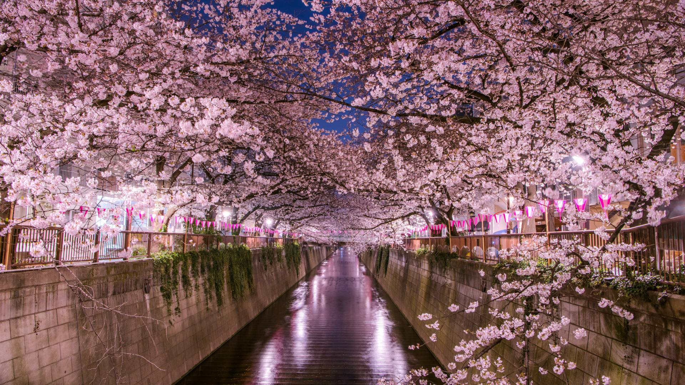

1.Japan,Tokyo
 |
 |  |
 |
 |
BASIC INFORMATION
Japan,Tokyo
Population: 13,94 millions
Lat: 35°41 North
Lon: 139°46 East
Tokio, la ajetreada capital de Japón, mezcla lo ultramoderno y lo tradicional, desde los rascacielos iluminados con neones hasta los templos históricos. El opulento santuario Shinto Meiji es conocido por su puerta altísima y los bosques circundantes. El Palacio Imperial se ubica en medio de grandes jardines públicos. Los distintos museos de la ciudad ofrecen exhibiciones que van desde el arte clásico (en el Museo Nacional de Tokio) hasta un teatro kabuki reconstruido (en el Museo Edo-Tokyo).
For more info, please click here